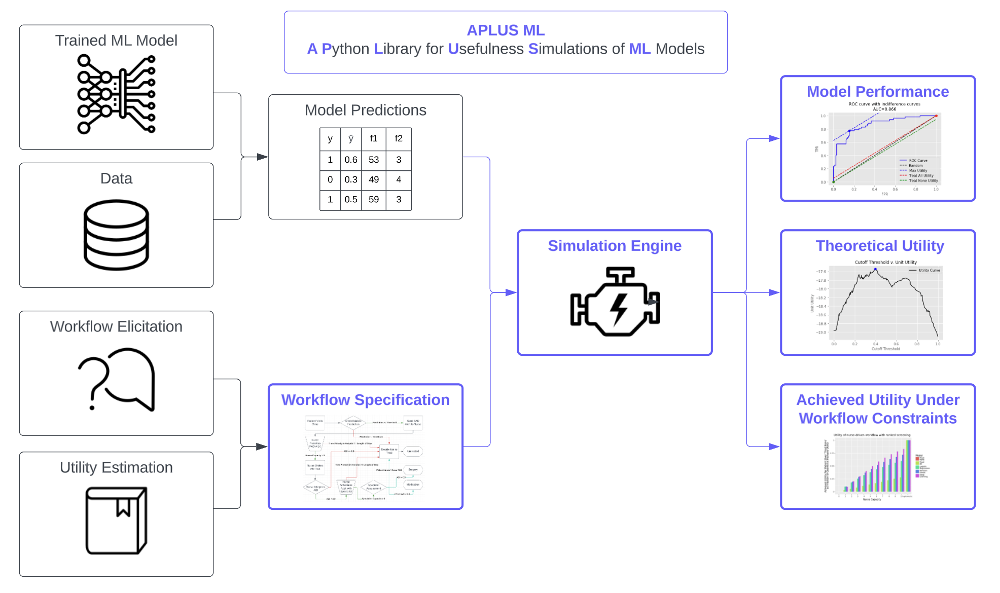

APLUS ML
{kind=link}

🧑💻 Installation
First, install the aplusml package:
pip install aplusml
Second, install graphviz to enable workflow visualization:
brew install graphviz
Please see the Background for a high-level conceptual overview of APLUS, or jump straight to Quick Start for a step-by-step walkthrough of using APLUS to model a clinical workflow.
🚀 Quick Start
import aplusml
# Create config
config = aplusml.config.Config(
metadata = aplusml.config.ConfigMetadata(
name = 'My Simulation',
),
states = {
'start' : aplusml.config.ConfigState(
type = 'start',
transitions = [
aplusml.config.ConfigTransition(dest = 'end_1', prob = 0.5),
aplusml.config.ConfigTransition(dest = 'end_2', prob = 0.5),
],
),
'end_1' : aplusml.config.ConfigState(
type = 'end',
utilities = [
aplusml.config.ConfigUtility(
value = 1,
unit = 'qaly',
),
],
),
'end_2' : aplusml.config.ConfigState(
type = 'end',
utilities = [
aplusml.config.ConfigUtility(
value = 2,
unit = 'qaly',
),
],
),
},
)
# Create simulation
sim = aplusml.Simulation.create_from_config(config)
# Run simulation
patients = sim.create_patients_for_simulation([ aplusml.Patient(id=1, start_timestep=0) ])
patients = sim.run(patients)
# Visualize first patient's trajectory through workflow
print(patients[0].history)
Key Features
APLUS ML (A Python Library for Usefulness Simulations of Machine Learning Models) is a simulation framework for conducting usefulness assessments of machine learning models in workflows, as originally published in this 2023 JBI paper.
It aims to quantitatively answer the question: If I use this ML model within this workflow, will the benefits outweigh the costs, and by how much?
Easy-to-use simulation framework
Comprehensive model evaluation tools
Extensible architecture for custom simulations
Built-in visualization capabilities
Documentation
🚦 Introduction
Citation
@article{wornow2023aplus,
title={APLUS: A Python Library for Usefulness Simulations of Machine Learning Models in Healthcare},
author={Wornow, Michael and Ross, Elsie Gyang and Callahan, Alison and Shah, Nigam H},
journal={Journal of Biomedical Informatics},
pages={104319},
year={2023},
publisher={Elsevier}
}